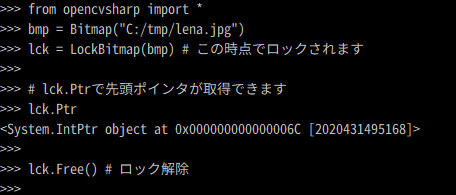

OpenCvSharp4.1のころの記事です。
IronPythonからOpenCVSharp その1 で、IronPythonからOpenCVを使う事ができるようになりました。
しかし、個人的に欲しいなあ、という機能がいくつかあったのでC++/CLIで作成しました。以下にヘッダーファイルをあげます。
// wk_util_opencvsharp.h
#pragma once
using namespace System;
using namespace OpenCvSharp;
using namespace System::Drawing;
using namespace System::Drawing::Imaging;
using namespace System::Windows::Threading;
namespace wk_util_opencvsharp
{
public ref class Cv2Util
{
public:
static void Memcopy(IntPtr src, IntPtr dst, int num);
static Byte GetByteValue(Mat^ mat, int index);
static void SetByteValue(Mat^ mat, int index, Byte value);
static void GrayscalePalette(Bitmap^ bmp);
static int SizeOfSbyte();
static int SizeOfByte();
static int SizeOfShort();
static int SizeOfUshort();
static int SizeOfInt();
static int SizeOfUint();
static int SizeOfLong();
static int SizeOfUlong();
static int SizeOfChar();
static int SizeOfFloat();
static int SizeOfDouble();
static int SizeOfDecimal();
static int SizeOfBool();
static void DoEvents();
};
public ref class LockBitmap
{
private:
System::Drawing::Bitmap^ _src;
System::Drawing::Imaging::BitmapData^ _srcData;
System::Drawing::Imaging::PixelFormat _pf;
int _w;
int _h;
int _st;
IntPtr _ip;
public:
LockBitmap(System::Drawing::Bitmap^ ini);
void Free();
property IntPtr Ptr
{
IntPtr get()
{
return _ip;
}
}
};
}
簡単に関数やクラスを説明します。
- 「void Memcopy(IntPtr src, IntPtr dst, int num)」
- C#の「Marshal.Copy()」は、「IntPtr」同士のコピーできません。C++の「memcpy」を利用しました。まさにC++/CLIのマネージ拡張機能の活用です。
- C#の「Marshal.Copy()」は、「IntPtr」同士のコピーできません。C++の「memcpy」を利用しました。まさにC++/CLIのマネージ拡張機能の活用です。
- 「Byte GetByteValue(Mat^ mat, int index)」と「void SetByteValue(Mat^ mat, int index, Byte value)」
- IronPythonから、「Mat.At」、「Mat.Get」、「Mat.GetArray()」などで、画像データであるMatの要素にうまくアクセスすることができませんでした。（Set系もです。）勉強不足です。。。
- 代りに「Mat.DataPointer」を利用した簡単な関数を作成しました。
- 「void GrayscalePalette(Bitmap^ bmp)」
- Bitmapクラスを「PixelFormat.Format8bppIndexed」で新規作成した時、カラーパレットはグレイスケールになっていません。
- カラーパレットをグレイスケールにする関数です。
- 「int SizeOf***()」
- C++の「sizeof」関数です。
- C++の「sizeof」関数です。
- 「LockBitmapクラス」
- Bitmapクラスから先頭ポインタを取得するためのクラスです。使い方は以下の通りです。

- Bitmapクラスから先頭ポインタを取得するためのクラスです。使い方は以下の通りです。
詳細は「wk_util_opencvsharp.cpp」を見てください。そんなに難しいことはしていません。